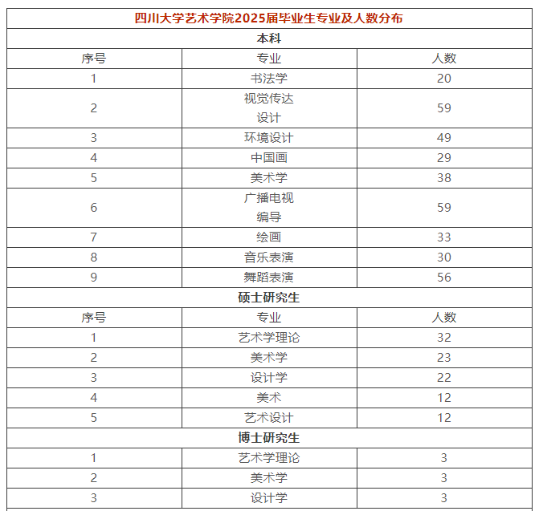

学院通知 · 校园活动
用人单位邀请函 | 四川大学艺术学院2025年春季艺术类专场招聘会
发布时间：2025-04-07
邀请函 尊敬的用人单位： 衷心感谢您长期以来对四川大学艺术学院就业工作的大力支持！ 为深入落实党中央、国务院和省委、省政府关于高校毕业生就业工作的指导方针，扎实推进高校毕业生高质量充分就业，精准服务青年学子就业需求，我院持续深化艺术类人才就业服务品牌建设。自2013年创办以来已累计举办十二届艺术类专场招聘会，通过搭建校企合作育人平台、创新供需精准对接机制等举措，有效地促进了招聘单位与应届毕业生之间的沟通与交流，为区域文化艺术产业高质量发展提供了有力人才支撑。 2025年4月18日，我院将在四川大学艺术学院中庭举办新一轮艺术类专场招聘会，为艺术类毕业生和用人单位选聘搭建更便捷、宽广的双向选择平台。我们诚挚地邀请贵单位莅临选才，与我院学生交流互动。 期待贵单位的支持与参与，共同构筑艺术人才交流的优质平台，为推动艺术教育事业的繁荣与发展贡献一份力量。 一、活动详情 举办时间：2025年4月18日 14：30—17：00 举办地点：四川大学江安校区艺术学院中庭 二、学院毕业生专业及人数信息 本科 ： 美术学、视觉传达设计、舞蹈表演、环境设计、广播电视编导、书法学、中国画、绘画、音乐表演(声乐)专业 硕士： 艺术学理论、美术学、设计学、美术、艺术设计 博士： 比较艺术学、艺术理论与批评、美术史与理论、美术创作理论与实践、中国画与书法、设计史与理论、设计创作理论与实践 博士后： 艺术学 三、用人单位报名及进校方式 1、单位报名 用人单位请将 单位资质、营业执照、招聘简章 和 参会回执 （见附件）等相关资料打包以 文件名“艺术学院2025春季双选会报名” 于 4月13日12:00前 发送至艺术学院邮箱： scuart2023jy@163.com 2、单位资质审核 报名截止后2个工作日内，学院将统一审核和筛选用人单位。 由于展位数有限，本次双选会将优先选择与我院就业引导更匹配的用人单位。 未能通过审核的用人单位学院将通过线上渠道推荐给我院毕业生。 学院将逐一通知审核通过的用人单位，审核通过即报名成功。 具体展位信息请现场查看。 3、招聘人员进校 请单位进校人员于进校前两个工作日按照通知填写提交进校人员基本信息，按约定时间从 江安校区东南门进校 。 四、招聘注意事项 1、本次双选会活动不收取任何参会费用，食宿由参会单位自理。 2、请进校人员严格配合学校工作要求和场地管理规定，招聘场地严禁一切形式的粘贴、悬挂。 3、本次双选会为每家单位提供1个展位，参会单位可自行携带1个易拉宝或X展架。 联系电话：028-85998752 地址：四川成都双流航空港川大路四川大学江安校区艺术学院 四川大学艺术学院 附件 参会回执
